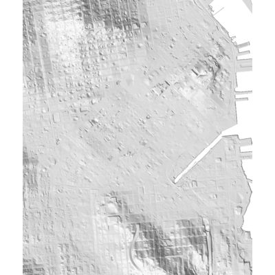
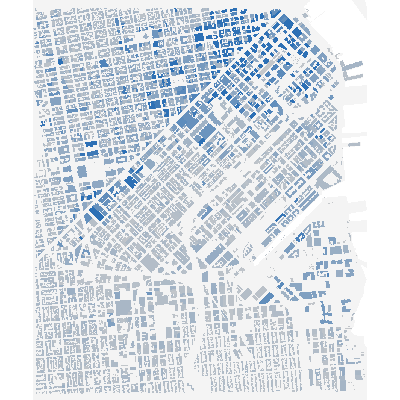
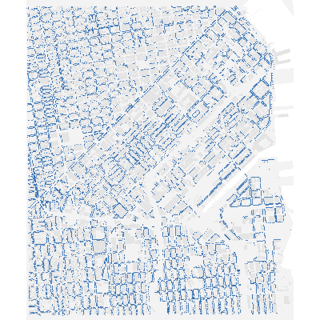
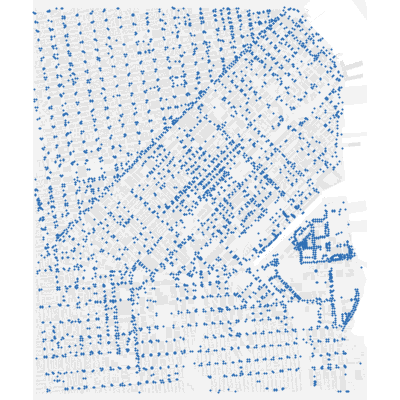
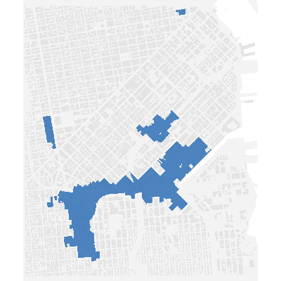
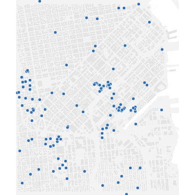
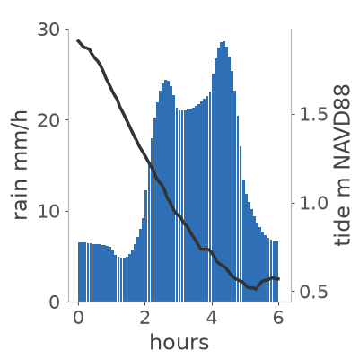

| Water | Rain, runoff, drains and Bay tide on a 4 m lidar grid | \(q^{t+\Delta t}=\dfrac{q^t-g\,h\,\Delta t\,\partial\eta/\partial x}{1+g\,\Delta t\,n^2|q|/h^{7/3}}\) | Bates 2010 · de Almeida 2012 |
| Wind | Lattice-Boltzmann LES around real buildings, 16 m | D3Q19 BGK + \(\nu_t=(C_s\Delta)^2|\bar S|\) | Latt & Chopard 2006 · Smagorinsky 1963 |
| Trees | 23,564 street trees snap, or uproot on wet soil | \(M>\mathrm{MOR}\,\pi d^3/32\) or \(M>C_{\rm reg}\,m(1-0.4\,s)\) | Virot 2016 · Nicoll 2006 |
| Damage | Every building, by occupancy and storeys reached | \(L=\mathrm{DDF}(d)\cdot V\cdot n_{\rm wet}/n_{\rm floors}\) | FEMA Hazus FAST · USACE NACCS |
| Costs | Plans priced from the physical change, not by the model | \(\mathrm{BCR}=L_{\rm avoided}\cdot\mathrm{AEP}\cdot\mathrm{PV}\,/\,C\) | FEMA BCA · OMB A-94 |







Compared with: InfoWorks ICM · HEC-RAS 2D · OpenFOAM · FEMA Hazus — same equation families, coupled into one run an AI can iterate on